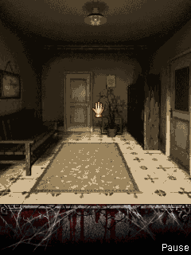

I was especially excited about Silent Hill: Orphan. I said I hoped it would be our magnum opus, and I had no idea why. Then its interface gave us a very immediate problem: the directional pad wasn’t direct movement.L04SH01
Select the way out.
Holding a direction moved the cursor or crosshair. Walking and turning required highlighting the scene’s navigation arrows and pressing Interact. Treating the pad as direct character movement would have explained the game incorrectly before changing a single key.SH01

The original orphanage room with its cursor and Map/Pause footer. Retained from the 0.1.1 caption replay on the desktop host.
Open the image for the full original view.
SH90Fire/5 already served interaction, confirmation and shooting in different original contexts. Draw/Holster used another key. The bridge needed to expose those meanings while keeping the actual bindings stable.SH01SH02
Words from the game.
We took the new labels from real drawString calls and read-only menu/gun state. The softkeys could show Select/Back, Next/Skip or Map/Pause as the game drew them, while unlabeled keys stayed neutral. We had the original words available to explain what the buttons did.SH02SH03
The original host sequence changed Interact to Fire and back by drawing and holstering the weapon. Save and Saved game returned to the recorded hallway. Reports could also publish while the worker was suspended.SH03SH04SH08
Even putting this history together took a small recovery. The checkpoint ZIP had lost its directory, but we could verify complete members before the truncated SDK tail by size and CRC. The game records we needed had survived.SH10
About these records
The magnum-opus hope is owner motivation, not a claim of finished quality. The selected source members were recovered and verified from a truncated archive. Original room/save/caption replay, earlier physical reports and later framework checks retain separate scopes. The image is historical Java ME host output; drawing the weapon is not proof of completed combat.
The receipts
Selected source lines, investigation notes and recorded feedback. Open a receipt for the original context and scope.
L04 / The Silent Hill hopeOwner feedback
Source: Owner’s Silent Hill: Orphan project message, retained in project conversation context
An owner hope at the start of the project, not a certification of final quality.
I'm really hoping for this to be our magnum opus, I literally have no idea why, but it's good to have goals!!
SH01 / Walking uses scene arrows, not direct direction movementCheckpoint investigation notes
Source: Silent_Hill_Orphan_Bridge_v0.1.1_PRIVATE_CHECKPOINT.zip / Silent_Hill_Orphan_Bridge_v0.1.1_PRIVATE/README_FIRST.txt · selected lines 11–25
HOW TO PLAY D-pad moves the original cursor or crosshair, and chooses menu items. INTERACT / CONFIRM / FIRE all send original Fire / 5, with the current purpose shown directly on the same button. Walk and turn by highlighting the game's scene navigation arrows and pressing INTERACT. Holding a direction moves the cursor; it does not directly walk. Inventory sends original * to open the inventory when no other menu is open. DRAW / HOLSTER WEAPON sends original 1. FIRST AID sends original 3 and uses an available kit. The left and right softkeys follow their current original captions. Map unlocks through original play. An unlabeled key shows LEFT KEY or RIGHT KEY. ORIGINAL KEYPAD and D-PAD RETURN switch inline with the same live viewport. Android system Back closes the bridge and returns to Omni when launched there. The native Pause menu contains Save. After restarting, Play > Saved game loads it. SAVE REPORT writes a .txt to Downloads/Silent Hill Orphan Bridge/.
SH90 / Historical image / Silent Hill: OrphanHistorical host capture
Source: Silent_Hill_Orphan_Bridge_v0.1.1_PRIVATE/evidence/v011_room_now.png
Retained historical host output. Original emulator chrome, where present, is part of the unchanged source image. No phone capture or phone performance is inferred.
Unchanged historical image. Source member: Silent_Hill_Orphan_Bridge_v0.1.1_PRIVATE/evidence/v011_room_now.png SHA-256: 4d3ded7da86e181360aecb3d8ec28a9cdbba49fb45ced8c6de714201e7be8384 The original orphanage room with its cursor and Map/Pause footer. Retained from the 0.1.1 caption replay on the desktop host. Scope: Historical original-MIDlet host execution with read-only presentation adapter; visually inspected, game only, zeroEXIF.
SH02 / The game supplies its own changing button wordsCheckpoint investigation notes
Source: Silent_Hill_Orphan_Bridge_v0.1.1_PRIVATE_CHECKPOINT.zip / Silent_Hill_Orphan_Bridge_v0.1.1_PRIVATE/CHANGELOG_v0.1.1.txt · selected lines 3–20
Button wording now follows the original game. The existing left/right softkey buttons mirror actual captions rendered by the game: Select/Back, Next/Skip, Change/Continue, Map/Pause when a map is available, and other native captions. An unlabeled original softkey keeps a neutral LEFT KEY / RIGHT KEY caption. The primary original Fire/5 button reads INTERACT, CONFIRM while a native menu is open, or FIRE while the original gun mode is active. DRAW WEAPON becomes HOLSTER WEAPON in that native mode. The underlying keycodes never change. Inventory and First Aid have explicit names. The D-pad has a visible CURSOR / MENU caption; the inline numeric keypad has ORIGINAL PHONE KEYS. Essential actions remain in both layouts. Redundant softkeys were removed from the small numeric cluster because their complete, labeled buttons remain directly beside it. Digits, *, #, Clear and both softkey bindings remain accessible. Labels update on the same Button objects without changing input owners, releasing held keys, altering the viewport, recreating the game or changing game logic. The original renderer supplies the words directly; no pixel OCR, press-based guessing or replacement guest code is used.
SH03 / Caption observations come from actual draw callsCheckpoint investigation notes
Source: Silent_Hill_Orphan_Bridge_v0.1.1_PRIVATE_CHECKPOINT.zip / Silent_Hill_Orphan_Bridge_v0.1.1_PRIVATE/evidence/control_evidence_notes.txt · selected lines 1–10
Original source audit for v0.1.1 Original e.x renders d.c menu stack captions from d.b:String (left) and d.c:String (right), at BOTTOM|LEFT / BOTTOM|RIGHT and height minus two pixels. Original g.c and g.a(Graphics) render scene/dialogue captions at the same edge. NativeControls observes these real draw calls before rasterization within each Canvas repaint. Original guest classes keep the same production j2me transform. Original d.a()Z returns whether d.c:Vector is nonempty. Original g.a()Z uses inherited e.t:int (sys_battleState) to handle Fire and draw the crosshair. g.f:boolean tracks invGun availability. All are read only. Actual host key 1 changed INTERACT -> FIRE -> INTERACT in the captured original sequence.
SH04 / The original hallway saves and reloadsHistorical original-MIDlet host acceptance
Source: Silent_Hill_Orphan_Bridge_v0.1.1_PRIVATE_CHECKPOINT.zip / Silent_Hill_Orphan_Bridge_v0.1.1_PRIVATE/VERIFICATION.txt · selected lines 36–50
ORIGINAL EXECUTION Executed the supplied original M / a–i classes with all original assets and chunks. The production Omni j2me transformer redirects Class.getResourceAsStream and inserts probes into existing exception handlers. No gameplay logic, rooms, scripts, puzzle progression, combat rules or assets were reconstructed. Host replay and APK builds produced identical adapted original class bytes. Observed genuine original language selection, sound screen, title/menu, tutorial, Ben's introduction, the orphanage hallway, cursor movement and the Gun inventory. Invoked the original native Save command, observed Game saved, shut down the MIDlet and its workers, restarted, selected Saved game and rendered the saved hallway again. See saved_live.png, inventory_direct.png and loaded_room.png. The save receipt records hashes without packaging the test profile. Observed original MIDI requests; audio bytes were retained for diagnosis. This does not establish audible output or completion of the game.
SH08 / A report can publish while the original worker is suspendedCheckpoint investigation notes
Source: Silent_Hill_Orphan_Bridge_v0.1.1_PRIVATE_CHECKPOINT.zip / Silent_Hill_Orphan_Bridge_v0.1.1_PRIVATE/VERIFICATION.txt · selected lines 67–78
LIFECYCLE AND REPORTS Real Android Engine tests run the original adapted MIDlet and resources using Android framework rendering/decoding. MediaPlayer is a test shadow. Background suspension, resume, original worker teardown and re-entry with a preserved file sentinel pass. Two real-Engine framework tests pass. The actual report writer publishes a valid .txt through a test Android content provider while the original worker is suspended. Rejected publication is reported as failure and the private pending report survives for retry. This provider test is separate from actual Downloads behavior on the phone. The original engine catches exceptions during optional asset lookup, empty RMS initialization and packed-data fallback. Reports preserve those separately from bridge faults. Their existence is not proof of a crash or proof of correctness.
SH10 / Selected records recovered from the truncated checkpointArchive inspection
Source: Silent_Hill_Orphan_Bridge_v0.1.1_PRIVATE_CHECKPOINT.zip / editorial archive inspection
Derived archive finding, not an original game-session log. The full recovery inventory remains private.
The 39,671,591-byte supplied checkpoint has no ending ZIP directory and is rejected by the ordinary ZIP reader. Read-only local-header recovery found 141 complete members before the truncated SDK tail. Recovered members were accepted only when decompression, uncompressed size and CRC32 matched their local headers. The selected documents and historical images used here passed those checks. Original archive bytes were not repaired or replaced.